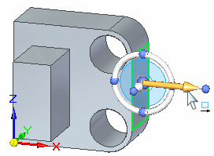
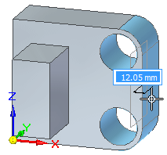
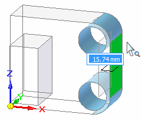
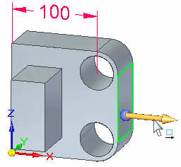
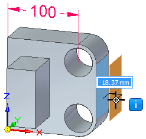
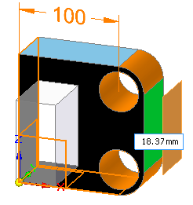
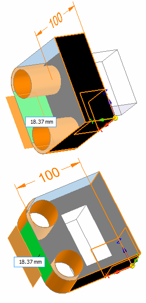

Model display in Solution Manager
When you are in Solution Manager mode, the model faces that participate in the solution change colors.
The following example illustrates the face coloration in a successful solution situation.
Synchronous editing starts when you select a face.

As the cursor moves, the participating faces dynamically extend.

After the Solution Manager starts, model faces involved in the solution change color. The remainder of model faces display as transparent.

The following example illustrates the face coloration in a failed solution situation.
During a synchronous edit,

as the cursor moves in a dynamic extent, notice that an error occurs. The solution is in a fail state.

When Solution Manager starts, model faces involved in the solution change color. The remainder of the model faces are transparent.


|
Face Type |
Color |
Example |
Notes |
|---|---|---|---|
|
Rest of Model - ROM |
Transparent |
||
|
Select Set |
Green (Select color) |
||
|
Failed placement of Select Set – These faces are where we would like the select set to be if it were solving successfully. |
Orange (Highlight Color) |
||
|
Solving (no error path) no relaxed relations |
“Solving” Blue (Sky Blue) |
Successful move |
|
|
Solving, but with some severed relationships. |
½ “Solving” Blue (Sky Blue) |
||
|
Failed Path Cases |
Orange (“Over constrained” Color) |
||
|
Rigid Procedural Features (Ribs, Webs, Patterns, etc.) |
Purple (“Driven” color) |
||
|
Grounded Faces |
Black |
Overrides any other coloration. |
|
|
Isolated Faces |
Red (Handle Color) |
Overrides any color other than black. |